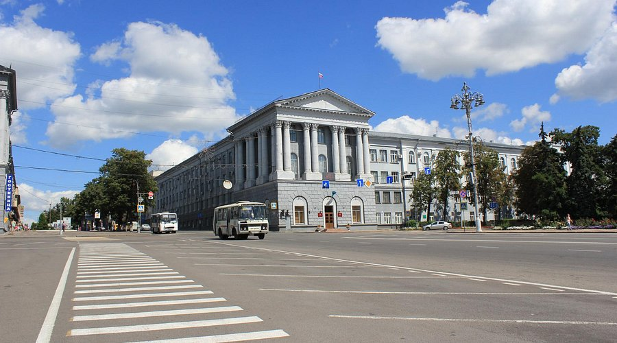

Красная площадь
Главная площадь Курска и одна из самых узнаваемых его достопримечательностей. Здесь проходят городские праздники, концерты, парады и массовые мероприятия.
Главная площадь Курска и одна из самых узнаваемых его достопримечательностей. Здесь проходят городские праздники, концерты, парады и массовые мероприятия.
Один из главных православных храмов Курска, построенный в классическом стиле. Собор является важным духовным центром и архитектурной доминантой города.

Живописный монастырский комплекс, известный не только историей, но и красивой природой вокруг: лес, река Тускарь и прогулочные тропы.
Монумент, посвящённый победе в Курской битве и подвигу защитников Отечества. Популярное место для прогулок и фотографий.
Любимое место прогулок горожан. Подходит для отдыха с детьми и активного досуга.
До большинства достопримечательностей можно добраться городским транспортом: автобусами, троллейбусами и маршрутными такси. Исторический центр удобно исследовать пешком.
Перед посещением музеев и храмов рекомендуется уточнять режим работы. Летом популярны прогулки по паркам и выезды в Коренную пустынь.